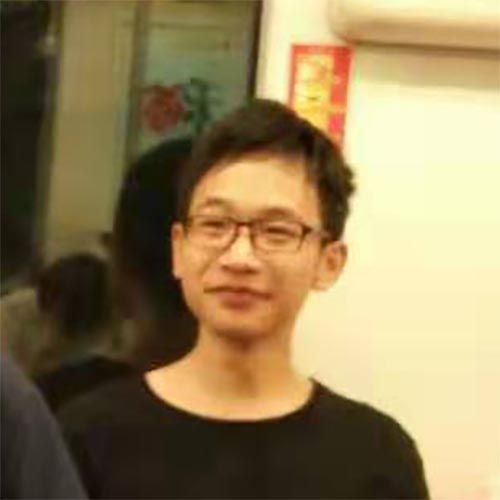

Current Members
Prof. Zhuoying Xie
Principal Investigator, Ph.D.
Zhuoying Xie obtained her Ph.D. in Biomedical Engineering from Southeast University, under the supervising of Prof. Zhongze Gu. After joining the faculty of Southeast University in 2011, he has been selected as the outstanding young backbone teacher of “Blue Project” and awarded the “Outstanding Youth Fund” of Jiangsu Province.
Jialun Chen
Master Student, Join in 2016
waiting for update

Hailong Ding
Master Student, Join in 2017
waiting for update

Wenya Chan
Master Student, Join in 2018
waiting for update
Alumni

Fan Xie
Master Student, Join in 2014
Fan Xie raised in Kangding, Sichuan.She graduated with B.S. from Southeast University in 2015, majoring in Biomedical Engineering. And she got Master degree in 2018, working with prof. Zhuoying Xie on functional mesoporous materials.

Sheng Tao
Master Student, Join in 2015
waiting for update

Shan Chen
Master Student, Join in 2015
waiting for update

Jingzhe Deng
Master Student, Join in 2016
waiting for update